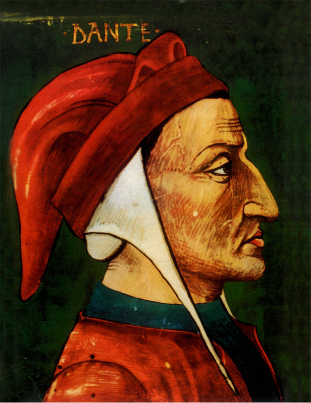
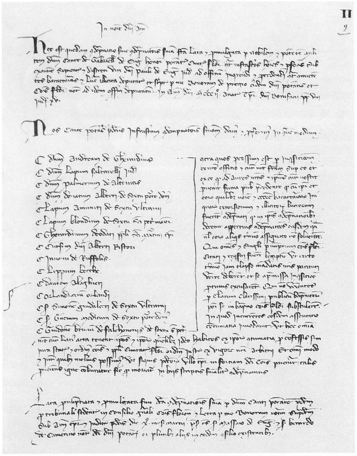

Dante Alighieri. Ritratto miniato
dell’inizio del sec. XV, attribuito a Giovanni del Ponte
(Firenze, Biblioteca Riccardiana, Ms. 1040).

Bando del podestà di Firenze Cante di Gabrielli da Gubbio, in data 10 marzo 1302, con il quale Dante Alighieri e altri coimputati sono condannati a morte in contumacia
(Firenze, Archivio di Stato).